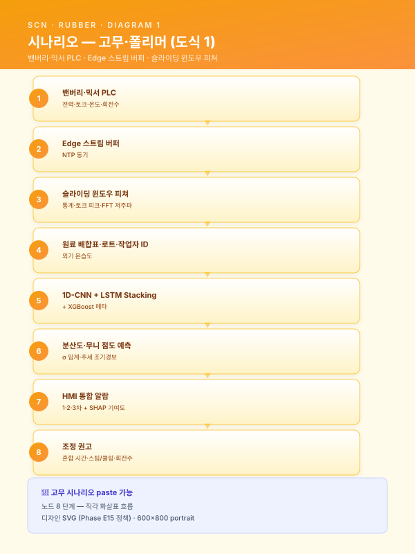
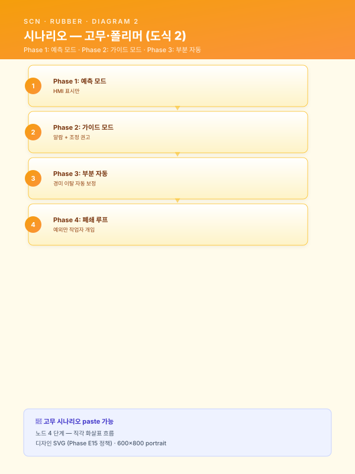
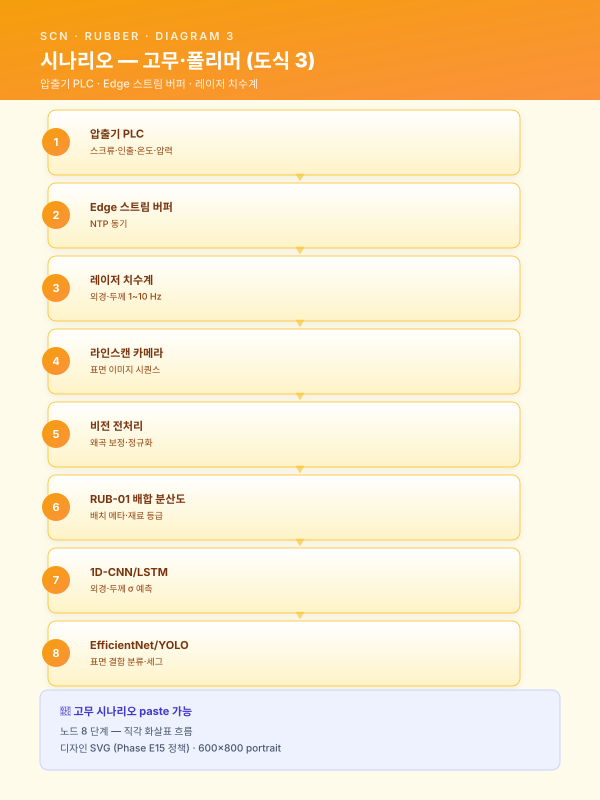
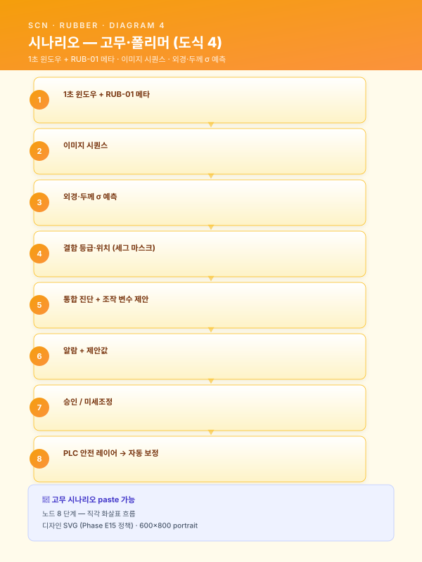
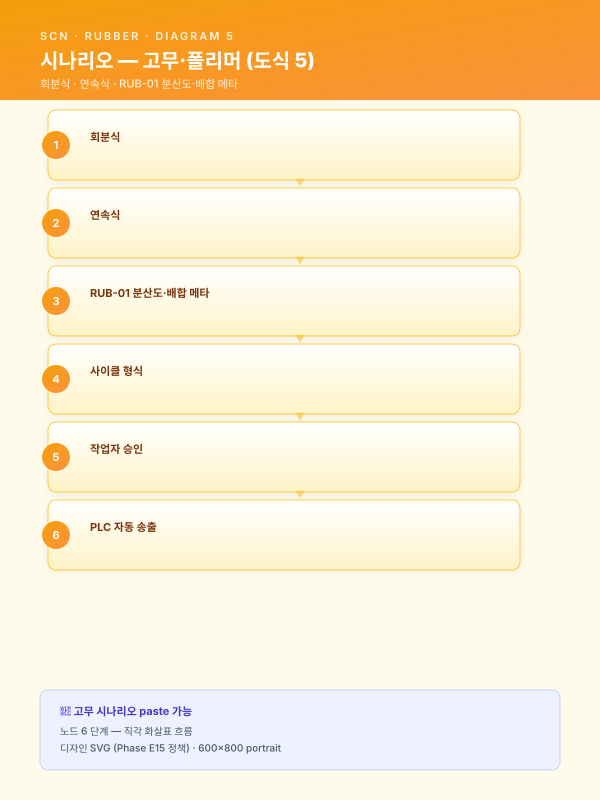
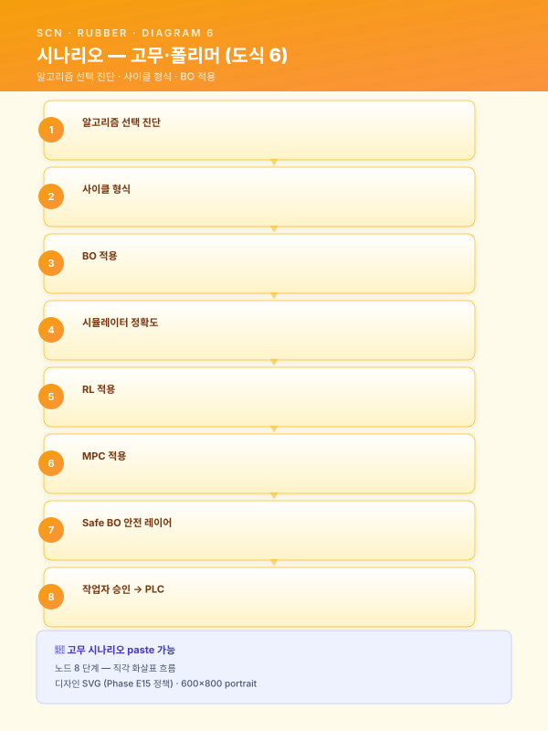
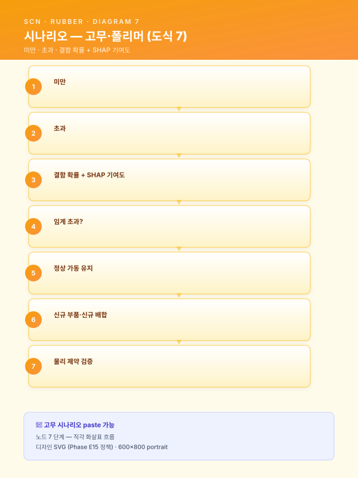
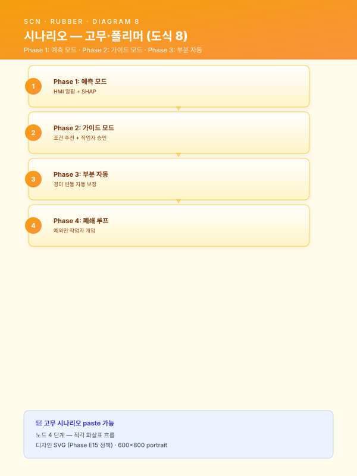
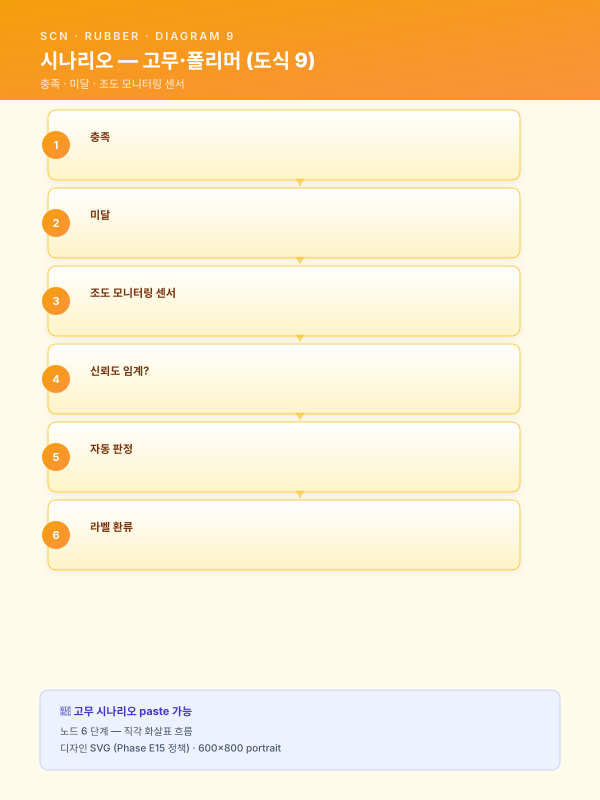
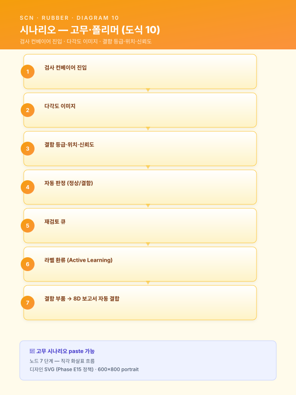

시나리오 상세 — RUB (고무·폴리머)¤
📖 약 34 분 읽기

ℹ️ 페이지 정보 (워크스페이스 메타)
자체평가 갭 15 해소. 5 RUB 시나리오 (RUB-01~05) 의 사업계획서 직접 투입 가능한 상세 본문. scenario/detail-top5.md (LLM-01·STL-08·STL-04·STL-09·UTL-01) + scenario/detail-phase2.md (STL-05·STL-06·MLO-03·LLM-02) 와 합치면 패키지 2·4·5 의 전 시나리오 상세 자산이 완비된다.
플레이스홀더 범례 —
[고객사]고객사명,[공정]대상 공정명,[수치]수치,[기간]기간,[%]비율,[OEM]자동차 완성차 OEM 명칭,[부품]호스·실링·웨더스트립 등 부품명.
사용 안내¤
- 본 5 시나리오는 패키지 4 (중견 고무·폴리머 양산사) 의 핵심 시나리오군에 해당한다.
pkg/pkg4-rubber.md§8.1 의 5 카드 요지 확장(175 줄, 카드별 약 35 줄) 을 본 자산이 정식 표준 자산으로 확장·표준화한다. - 각 시나리오 섹션은 ① 적용 맥락 (1 문단) ② AS-IS — 현재의 공백 (1~2 문단) ③ AI 해결 — 도입 후 운영 모습 (2~3 문단) ④ 기대효과 표 ⑤ 삽화(Mermaid) 1~2 개 로 구성된다 (
scenario/detail-top5.md·scenario/detail-phase2.md와 동일 5 단 구조). track/track1-engine-cards.md의 5.2-b 시계열·5.2-c 비전·5.2-e 최적화·제어 엔진 패턴을 명시 인용하여 Track 1 5.2 절과 매핑된다. 특히 RUB-02 압출은 5.2-b + 5.2-c 결합 (이중 추론 + 피드포워드 제어) 의 1 차 시연 시나리오이다.- 사업계획서 §8.1 시나리오 상세 또는 §5.2 엔진별 적용 사례 또는 패키지 4 본문(
pkg/pkg4-rubber.md) 의 해당 섹션에 그대로 인용 가능하다. 자동차 OEM 협력사 (화승급) 사업이면 RUB-01·02·05 우선 도입, 일반 고무 양산이면 RUB-03·04 추가가 권장된다. - SCN ID 인용 정책은
guide/assembly.md§3 을 준수한다 (시나리오 ID 는 본문 첫 인용 시 풀네임·이후 약식 인용 허용).
시나리오 ↔ 5.2 엔진 패턴 ↔ Track 매핑 요약¤
| 시나리오 ID | 핵심 엔진 패턴 | 결합 가능 패턴 | 주 트랙 | 보조 연계 트랙 | 권장 도입 단계 |
|---|---|---|---|---|---|
| SCN-RUB-01 배합 분산도 예측 | 5.2-b 시계열 품질·이탈 예측 | 5.2-a 유사 사례 (배치 비교) | Track 1 | Track 2 (드리프트 트리거) | 핵심 (Phase 2) |
| SCN-RUB-02 압출 라인 치수·표면 실시간 검사·제어 | 5.2-b + 5.2-c 결합 | 5.2-e (스크류 회전수 자동 보정) | Track 1 | Track 2 (드리프트) | 주력 (Phase 1~2) |
| SCN-RUB-03 가류 시간·온도 최적화 | 5.2-e 공정 최적화·제어 | 5.2-b (배합·형상 메타 결합) | Track 1 | Track 2 + Track 3 (작업표준 RAG) | 핵심 (Phase 2) |
| SCN-RUB-04 사출 불량 예측·조건 추천 | 5.2-c 비전 (육안 검사 보조) | 5.2-b (사출기 시계열) + 5.2-a (조건 추천) | Track 1 | Track 2 (피드백 루프) | Quick Win (Phase 1) |
| SCN-RUB-05 고무 외관 비전 검사 | 5.2-c 비전 검사 | 5.2-f (LLM-03 결함 보고서 결합) | Track 1 | Track 2 (라벨 환류) | 확장 (Phase 2) |
적용 시 일반 원칙¤
- RUB-01 배합 → RUB-02 압출 → RUB-05 외관 의 인과 사슬 — 배합 단계의 분산 불량은 압출 단계의 외경·두께 편차로, 다시 외관 단계의 표면 결함으로 전이되는 다단계 인과 구조이다. 단일 시나리오 도입보다는 3 시나리오의 배치 ID·로트 ID 결합 분석을 통한 인과 추적이 본질적 가치를 창출하며, 이는 시너지 ROI 모델 §6.4 패키지 4 의 KPI 상호보강 시너지(α_kpi=1.05) 의 1 차 발현 영역이다.
- RUB-02 압출은 5.2-b + 5.2-c 결합의 차별적 시연 과제 — 시계열 (PLC + 레이저 치수계) 과 비전 (라인스캔 카메라) 의 두 엔진 출력을 동일 시간축·동일 부품 ID 로 결합하여 Model Router 로 통합 의사결정에 활용하는 패턴이며, 후속 SCN-MET-03 (3D 치수)·SCN-STL-10 (표면 결함 비전) 결합 확장 시 재사용 가능한 표준 결합 양식이다. 압출 라인 단독 도입 시에도 가치는 명확하나, 결합 운영 시 외경·두께 σ 와 표면 결함 동시 관리가 가능해진다.
- RUB-03 가류는 5.2-e 의 BO·RL 분기 진단 사례 — 가류 사이클이 회분식(프레스·오븐) 인지 연속식(컨베이어 가류) 인지에 따라 베이지안 최적화 (BO) 와 강화학습 (RL) 사이의 알고리즘 선택이 분기되며, 본 분기 의사결정 매트릭스(이산성·시뮬레이터 정확도·안전 PLC 연동) 는 SCN-STL-06 소둔 최적화의 분기 양식과 동일 골격을 가진다. 안전 레이어 (Safe BO·제약 BO) 의 명시적 설계가 인적·설비 안전 차원에서 필수적이다.
- RUB-04 사출은 데이터 성숙도가 낮은 단계의 Quick Win 진입 시나리오 — 사출기 OPC-UA 표준 인터페이스가 보편화되어 데이터 수집 진입 장벽이 낮고, 플래시·쇼트샷·웰드라인 등 결함 라벨이 비교적 명확하여 PoC 진입 효율이 높다. 본 시나리오로 데이터 수집·라벨링·HITL 파이프라인 운영 경험을 축적한 뒤 RUB-01·02·05 의 본격 도입으로 진화하는 점진적 도입 경로가 권장된다.
- RUB-05 외관은 검은 고무 표면의 미세 결함 학습 난이도가 본질적 도전 영역 — 결함 데이터 부족·조명 균일성 확보 난해·검사원 라벨 편차의 3 가지 도전이 결합되어 있어, Self-supervised Pretraining + 다각도 고조도 조명 + Active Learning 의 3 축 전략이 동시 적용되어야 한다. RUB-05 의 결함 검출 결과는 SCN-LLM-03 의 8D 보고서 자동 작성 입력으로 결합되어 KPI 시너지가 발현된다.
SCN-RUB-01 — 배합(Banbury·Mixer) 분산도 품질 예측¤
SCN-RUB-01">
📋 SCN-RUB-01 — 적용 맥락 (paste 가능)
중견 고무·폴리머 양산사의 1 차 배합 단계는 천연/합성 고무·카본블랙·가소제·가류촉진제·노화방지제 등 [수치] 종 원료를 밴버리·믹서에 투입하여 분산·혼련 후 무니 점도 [수치] 범위로 배출하는 공정이다. 본 단계에서 카본블랙·가소제의 분산이 균일하지 못하면 후속 압출·가류·외관 검사 단계에서 이탈·결함이 누적적으로 발현되나, 배합 단계 자체에서는 분산 상태를 직접 측정할 수단이 부재하여 작업자의 청각·토크 곡선 육안 판독에 의존하는 한계가 존재한다. 본 시나리오는 믹서 PLC 의 전력·토크·온도·회전수 시계열과 원료 배합표 메타를 입력으로 분산도·무니 점도를 배합 종료 직전에 예측하여, 목표 이탈 시 추가 혼합·스팀/쿨링 조정 권고를 제공함으로써 후속 공정으로의 불량 전이를 차단하는 것을 목적으로 한다. 본 시나리오는 track/track1-engine-cards.md 의 5.2-b 시계열 품질·이탈 예측 엔진 을 직접 차용한다.
SCN-RUB-01">
📋 SCN-RUB-01 — AS-IS — 현재의 공백 (paste 가능)
[고객사] 의 [공정] 배합 라인에서는 밴버리·믹서의 토크·전력 커브가 PLC 와 작업자 HMI 에 표시되고 있으나, 작업자가 청각(혼련 소리의 변화)·시각(토크 피크의 형태)·시간(경과 시간 임계) 의 3 가지 단서를 종합하여 배합 종료 시점을 결정하는 도제식 운영이 관행적으로 유지되고 있다. 동일 배합표·동일 원료 로트에 대해서도 작업자 A 와 작업자 B 의 종료 시점이 ±[%] 차이를 보이며, 이로 인한 분산도·무니 점도 편차는 후속 압출 단계의 외경·두께 편차와 가류 단계의 물성 균일성 저하로 누적 전이된다. 사후 점도 측정은 시험실에서 배치별 [기간] 후에 결과가 회신되므로, 배합 시점의 의사결정에는 환류되지 못하고 사후 통계 자료로만 활용되는 한계가 누적된다. 일부 사례에서는 분산 불량 배치가 압출·가류를 거쳐 외관 검사 또는 OEM 인수 검사 단계에 이르러서야 식별되며, 이때에는 이미 [수치] 만 원 규모의 후속 가공 비용이 매몰된 상태이다.
또한 작업자의 종료 의사결정 사유가 형식지화되지 못한 채 개인 노하우로만 보존되어, 베테랑의 퇴직·이직 시 분산도 진단 역량이 일시적으로 후퇴하는 인력 리스크가 상존한다. 카본블랙 등급·가소제 종류 변경·계절성 원료 점도 변동·신규 배합표 도입 등 운영 조건 변화 시 작업자의 기존 청각·시각 단서가 즉시 무효화되어 시행착오 단계로 회귀하는 현상도 빈번하며, 이때 발생하는 분산 불량 배치는 다시 후속 공정으로 전이되어 가시적 손실을 야기한다. MES 에는 배치 ID·작업자 ID·원료 로트가 기록되나, 사후 점도 측정 결과와의 자동 결합 분석 도구가 부재하여 어느 배합표·어느 원료 조합·어느 작업자 패턴이 분산 불량과 상관 있는지 정량적으로 규명되지 못하는 구조적 한계가 누적된다.
SCN-RUB-01">
📋 SCN-RUB-01 — AI 해결 — 도입 후 운영 모습 (paste 가능)
본 시나리오의 AI 해결 방안은 5.2-b 시계열 품질·이탈 예측 엔진 의 직접 적용이다. 밴버리·믹서 PLC 의 전력(W)·토크(N·m)·체임버 온도(°C)·회전수(rpm) 4 개 채널을 1~10 Hz 주기로 수집하여 NTP 동기 처리 후 엣지 노드의 스트림 버퍼에 적재한다. 슬라이딩 윈도우 단위로 통계 피쳐(평균·표준편차·기울기·1 차 차분)·시간 도메인 피쳐(토크 피크 시점·피크 후 감쇠율·적산 에너지)·주파수 도메인 피쳐(FFT 저주파 대역 에너지) 를 산출하고, 원료 배합표(고무·카본블랙·가소제·가류촉진제 종류 및 중량 비율)·원료 로트 ID·작업자 ID·외기 온습도 메타를 결합한다. 입력 텐서는 1D-CNN(국소 토크 피크 패턴 학습)·LSTM(혼련 진행에 따른 장기 경향 학습) 의 두 모델을 Stacking 으로 결합하고, 메타 피쳐는 XGBoost 메타 모델로 합성하여 분산도 지수·무니 점도를 배합 종료 직전 [수치] 초 시점에 예측한다.
예측값이 목표 범위에서 이탈한 경우(σ [수치] 초과 또는 추세 임계 도달) 작업자 HMI 에 1 차 주의·2 차 경고·3 차 긴급의 단계별 알람이 표시되며, 함께 추가 혼합 시간 [수치] 초 연장·스팀/쿨링 조정량·회전수 미세 조정 권고가 제안된다. 알람과 함께 SHAP 기반 변수 기여도가 시각화되어 어느 원료 메타·어느 시계열 피쳐가 이탈 예측의 주 원인인지 직관적으로 식별 가능하다. 작업자가 제안을 수용·기각·미세조정한 행위는 모두 로깅되며, 사후 점도 측정 결과는 배치 ID 기반으로 자동 결합되어 모델 학습 라벨로 분기 단위 환류된다. HMI 통합은 기존 믹서 HMI 의 우측 사이드 패널 형태로 추가 배포되어 작업자의 화면 전환 부담이 발생하지 않으며, 야간·교대조에서도 동일 알람 임계가 일관 적용되어 작업조별 종료 시점 편차가 구조적으로 축소된다.
운영 단계에서는 Track 2(SCN-MLO-01 드리프트 탐지) 가 PSI·KS 통계 기반으로 신규 카본블랙 등급·신규 가소제·계절성 원료 점도 변동·신규 배합표 도입에 따른 입력 분포 이동을 감시하며, 임계 초과 시 분산도 예측 모델 재학습이 자동 트리거된다. 자동차 OEM 의 PPAP 변경 통보·원재료 공급사 변경 등 외생 이벤트가 발생한 경우 별도 채널로 등록되어 즉시 챔피언·챌린저 검증 모드로 전환된다. 본 시나리오는 SCN-RUB-02 압출 라인의 외경·두께 편차 위험 가중 입력(배치 단위 메타 피쳐) 으로 결합되어 단일 시나리오 합산 대비 결합 운영 시 후속 공정 불량 전이율 추가 감소가 확보되며, SCN-LLM-03 8D 보고서 자동 작성에는 분산 불량 배치 발생 시 자동 호출되어 과거 동일 패턴의 처치 사례·근본 원인 분석 결과를 회신한다. 구축 4 단계(예측 모드 → 가이드 모드 → 부분 자동 → 폐쇄 루프) 의 단계화 진화 경로를 따르며, 각 단계의 KPI 게이트(분산도 예측 정확도 R²·조기 경보 리드타임·후속 공정 전이 차단율) 충족 시 다음 단계로 이행한다.
SCN-RUB-01">
📋 SCN-RUB-01 — 기대효과 (paste 가능)
| 영역 | AS-IS | TO-BE | 개선 효과 |
|---|---|---|---|
| 배합 배치 분산도 σ | [수치] | [수치] | [%] 축소 |
| 무니 점도 목표 이탈률 | [%] | [%] | [%] 감소 |
| 분산 불량 후속 전이율 | [%] | [%] | [%] 감소 |
| 작업자 간 종료 시점 편차 | ±[%] | ±[%] | 정량 표준화 |
| 사후 점도 라벨 결합 분석 가능률 | 수기 | 자동 (배치 ID) | 결합 분석 [%] 향상 |
| 베테랑 단독 진단 대체율 (신입 단독 가능) | [%] | [%] | [수치] %p 향상 |
도식¤


SCN-RUB-02 — 압출(Extrusion) 라인 치수·표면 실시간 검사·제어¤
SCN-RUB-02">
📋 SCN-RUB-02 — 적용 맥락 (paste 가능)
중견 고무·폴리머 양산사의 압출 라인은 호스·프로파일·웨더스트립·실링 등 단면 형상이 정의된 부품을 다이(die) 를 통과시켜 연속 성형하는 공정으로, 외경·두께·표면 품질이 자동차 OEM 의 사양 허용치 이내에 안정적으로 유지되어야 한다. 그러나 출측 1 개소의 사후 검사로는 라인 단위 이탈 길이가 누적된 후에야 보정이 가능하고, 표면 결함(스크래치·기포·플로우 라인) 은 외관 검사 단계에서 비로소 발견되는 한계가 존재한다. 본 시나리오는 track/track1-engine-cards.md 의 5.2-b 시계열 품질·이탈 예측 엔진(외경·두께 실시간 예측) 과 5.2-c 비전 검사 엔진(표면 결함 분류·세그멘테이션) 을 Model Router 로 결합하여, 두 엔진의 출력을 동일 시간축·동일 부품 ID 로 통합 추론한 뒤 작업자 HMI 에 통합 알람·조작 변수 제안(스크류 회전수·다이 온도·인출 속도) 을 제공하는 것을 목적으로 한다. 본 시나리오는 패키지 4 의 차별적 주력 시나리오 이며, 5.2-b + 5.2-c 결합 운영의 1 차 시연 과제이다.
SCN-RUB-02">
📋 SCN-RUB-02 — AS-IS — 현재의 공백 (paste 가능)
[고객사] 의 압출 라인에서는 다이 출측에 레이저 치수계 1 식이 설치되어 외경·두께를 측정하나, 측정 결과는 작업자 HMI 트렌드 화면에 시각 표시될 뿐 자동 보정 제어와는 연동되지 않는다. 작업자가 트렌드의 시각적 변화를 인지하고 스크류 회전수·인출 속도·다이 온도를 수동 조정하는 데까지는 [수치] 초 이상의 인지·반응 지연이 발생하며, 이 사이 라인 진행 속도(분당 [수치] m) 에 의해 [수치] m 이상의 이탈 길이가 누적된다. 일부 사례에서는 작업자가 트렌드 변화를 인지하지 못한 채 야간·교대조에서 [기간] 이상 이탈이 지속되는 경우도 발생하며, 이때 누적된 이탈 길이는 등급 강하·재가공·OEM 인수 검사 클레임으로 직결된다. 표면 결함의 경우 압출 단계에서는 작업자 육안에 의존하므로 사실상 검출이 불가능에 가깝고, 외관 검사실에서 발견될 무렵에는 동일 결함이 [수치] 분 단위로 라인에 누적된 상태가 다수이다.
또한 작업자의 조정 의사결정이 경험에 의존하여 동일 이탈 패턴에 대해 작업조별 상이한 처치가 적용되며, 일부 사례에서는 잘못된 조정으로 이탈이 오히려 확대되는 역효과까지 관찰된다. 외경·두께 이탈과 표면 결함은 같은 근본 원인(다이 마모·스크류 회전수 변동·재료 점도 변동) 에서 비롯되는 경우가 많음에도, 두 신호가 별도 시스템·별도 시각 화면·별도 처치 절차로 분리 운영됨에 따라 통합 진단·통합 처치가 사실상 불가능한 구조적 한계가 누적된다. 자동차 OEM 의 PPAP 사양 변경·SQA 변경관리 통보 시 재검증 의무에 정합한 데이터 자산도 부재하여, 변경 후 안정성 입증에 [기간] 이상이 소요되는 사례도 발생한다.
SCN-RUB-02">
📋 SCN-RUB-02 — AI 해결 — 도입 후 운영 모습 (paste 가능)
본 시나리오의 AI 해결 방안은 5.2-b 시계열 + 5.2-c 비전 결합 의 1 차 적용이다. (i) 시계열 파트 — 압출기 PLC 의 스크류 회전수·인출 속도·다이 온도·압력·체임버 온도(1~10 Hz) 와 레이저 치수계의 외경·두께(1~10 Hz) 를 NTP 동기 처리 후 엣지 노드 스트림 버퍼에 적재하고, 슬라이딩 윈도우 통계 피쳐 + 재료 메타(RUB-01 분산도 결과·배치 ID·재료 등급) 를 결합하여 1D-CNN/LSTM 모델로 외경·두께의 σ 임계 이탈 가능성을 100 ms 이내 실시간 예측한다. (ii) 비전 파트 — 라인스캔 카메라(라인 통과별 4K 해상도 이상) 가 표면 이미지를 연속 캡처하여 EfficientNet/YOLO 기반 분류·검출 모델로 스크래치·기포·플로우 라인·이물의 4 종 결함을 100 ms 이내 분류·세그멘테이션한다. 카메라 조명은 다각도 동축·환형 조명 조합으로 검은 고무 표면의 균일 조도를 확보하며, 라인 진행 속도와 동기된 셔터 속도로 모션 블러를 차단한다. (iii) Model Router 결합 — 두 엔진 출력은 부품 ID·라인 통과 시각·라인 위치(미터 단위) 로 결합되어, 작업자 HMI 에는 (a) 외경·두께 이탈 예측 단계 + (b) 표면 결함 등급·위치 + © 두 신호의 통합 진단(예: "외경 +0.3 mm 이탈과 표면 플로우 라인 동시 발생 → 다이 마모 의심") + (d) 조작 변수 제안(스크류 회전수 -[수치] rpm·다이 온도 +[수치] °C·인출 속도 -[%]) 의 4 항목이 동일 화면에 통합 표시된다.
피드포워드 제어 측면에서는 작업자가 제안을 승인할 경우 PLC 로 자동 송출되어 [수치] 초 이내 적용되며, 적용 후의 외경·두께·표면 결함 변화가 다시 두 엔진의 입력으로 환류되어 폐 루프 검증이 가능하다. 작업자의 수용·기각·미세조정 행위는 모두 로깅되며, OEM 인수 검사 결과·사후 출하 검사 결과는 부품 ID 기반으로 자동 결합되어 두 모델의 라벨로 환류된다. HMI 통합은 기존 압출 라인 HMI 의 우측 사이드 패널 형태로 추가 배포되어 작업자 화면 전환 부담을 발생시키지 않으며, 야간·교대조의 알람 처치 일관성을 구조적으로 보장한다. 안전 측면에서는 자동 보정 제어의 허용 범위(스크류 회전수 ±[%]·다이 온도 ±[수치] °C·인출 속도 ±[%]) 를 PLC 안전 레이어에서 하드코딩하여, 모델 출력이 해당 범위를 벗어날 경우 자동 차단·작업자 수동 모드 전환으로 안전 운영을 보장한다.
운영 단계에서는 Track 2(SCN-MLO-01 드리프트 탐지) 가 PSI·KS 통계 기반으로 신규 부품·신규 다이·계절성 재료 점도 변동·라인스캔 카메라 조명 노후화에 따른 입력 분포 이동을 감시하며, 임계 초과 시 두 모델의 재학습이 자동 트리거된다. 비전 모델의 경우 신규 결함 유형(이전 학습셋 미포함) 발견 시 Active Learning 큐로 분기되어 검사원 라벨링 후 재학습된다. 본 시나리오는 SCN-RUB-01 배합 분산도 결과를 입력 메타 피쳐로 결합하여 인과 사슬의 중간 단계로 작동하며, SCN-RUB-05 외관 검사와는 동일 부품 ID 결합으로 표면 결함 검출의 사전·사후 이중 안전망을 구성한다. 또한 SCN-LLM-03 8D 보고서 자동 작성에는 외경·두께 이탈 또는 표면 결함이 OEM 인수 검사 클레임으로 확대된 경우 자동 호출되어, 두 엔진의 시계열·이미지 증빙을 보고서 입력으로 결합한다. 구축 4 단계(예측 모드 → 가이드 모드 → 부분 자동 → 폐쇄 루프) 의 단계화 진화 경로를 따르며, Phase 1(M1~M6) 에 가이드 모드 진입, Phase 2(M7~M12) 에 부분 자동 진입의 12 개월 일정으로 운영된다.
SCN-RUB-02">
📋 SCN-RUB-02 — 기대효과 (paste 가능)
| 영역 | AS-IS | TO-BE | 개선 효과 |
|---|---|---|---|
| 외경·두께 σ | [수치] mm | [수치] mm | [%] 축소 |
| 라인 단위 이탈 길이 (회당 평균) | [수치] m | [수치] m | [%] 단축 |
| 표면 결함 사후 발견율 | [%] | [%] | [수치] %p 감소 |
| 작업자 인지·반응 지연 | [수치] 초 | [수치] 초 | [%] 단축 |
| OEM 인수 검사 클레임 (월) | [수치] 건 | [수치] 건 | [%] 감소 |
| 등급 강하·재가공 손실 (연) | [수치] 만 원 | [수치] 만 원 | [%] 절감 |
| 작업조 간 처치 편차 | 작업자별 상이 | 통합 알람·제안 | 정량 표준화 |
도식¤


SCN-RUB-03 — 가류(Curing) 시간·온도 최적화¤
SCN-RUB-03">
📋 SCN-RUB-03 — 적용 맥락 (paste 가능)
중견 고무·폴리머 양산사의 가류 단계는 압출·성형된 부품을 오븐·프레스에서 일정 시간·온도로 열처리하여 가황(고무 분자 사슬의 가교 결합 형성) 을 완료하는 공정으로, 본 단계의 가류도(degree of cure) 가 부품의 인장강도·신율·경도·내열성 등 핵심 물성을 결정한다. 그러나 최적 가류 시간은 배합 조성·부품 형상·몰드 온도·외기 온도·이전 사이클 잔열 등 다수 변수의 비선형 함수이며, 작업자가 표준 시간표에 의존하여 의사결정함에 따라 과가류(물성 저하·표면 경화)·미가류(가교 부족·물성 미달) 의 양극단이 동시에 발생하는 비효율이 누적된다. 본 시나리오는 track/track1-engine-cards.md 의 5.2-e 공정 최적화·제어 엔진 을 직접 차용하여, 배합·형상·몰드 온도·제품 내부 온도(가상 센서) 기반 가류도 예측 모델 위에 베이지안 최적화(BO) 또는 강화학습(RL) 의 최적화 알고리즘을 결합하고, 안전 레이어를 통과한 최적 언로딩 시점·온도 프로파일 권고를 작업자에게 제공하는 것을 목적으로 한다.
SCN-RUB-03">
📋 SCN-RUB-03 — AS-IS — 현재의 공백 (paste 가능)
[고객사] 의 가류 공정은 부품·배합 조합별로 작성된 표준 가류 시간표(예: 부품 A·배합 X 는 [기간], 부품 B·배합 Y 는 [기간]) 에 의존하여 운영되고 있으나, 표준 시간표는 보수적으로 설정되어 실제 최적 시간 대비 [%] 이상 과잉 가류가 일상화된 상태이다. 과잉 가류는 단순 사이클 타임 손실 외에도 가스(LNG)·전기 에너지 원단위 상승, 표면 경화에 의한 물성 저하, 일부 배합의 가교 밀도 과잉으로 인한 신율 저하 등 복합 손실로 누적된다. 반대로 외기 저온 시즌·이전 사이클 잔열 부족 시에는 표준 시간표가 미가류 영역에 속하여 가교 밀도 부족으로 인장강도 미달 부품이 발생하고, 일부 사례에서는 OEM 인수 검사 단계에서 미가류가 식별되어 [수치] 만 원 규모의 클레임·반품으로 확대된다.
또한 가류 공정의 핵심 변수인 제품 내부 온도는 직접 측정이 곤란하고(부품 형상·몰드 구조에 의해 열전대 매립 위치가 제한됨) 몰드 외부 온도와의 시간 지연·열전달 계수가 부품별로 상이하여, 작업자의 종료 시점 판단이 본질적으로 불완전한 정보 위에서 이루어지는 구조적 한계가 존재한다. 가류도 측정은 시험실에서 사후 [기간] 단위로 수행되므로 실시간 의사결정에는 환류되지 못하며, 사후 분석에서도 어느 부품·어느 배합·어느 외부 조건이 과/미가류와 상관 있는지 정량적으로 규명되지 못한다. 가류 사이클 타임 단축은 양산 라인의 병목 해소·증산 효과로 직결됨에도, 표준 시간표의 보수성을 정량 근거 없이 단축할 수 없는 의사결정 마비 상태가 누적된다. 베테랑의 사이클 단축 노하우(예: "이 배합·이 외기 조건이면 표준에서 [수치] 분 단축 가능") 가 형식지화되지 못하여 인력 리스크로도 작용한다.
SCN-RUB-03">
📋 SCN-RUB-03 — AI 해결 — 도입 후 운영 모습 (paste 가능)
본 시나리오의 AI 해결 방안은 5.2-e 공정 최적화·제어 엔진 의 직접 적용이며, 두 모듈로 구성된다. 첫 번째는 가류도 예측(가상 센서) 모듈 로, 배합 조성(고무·카본블랙·가류촉진제 비율)·부품 형상(두께·체적·표면적)·몰드 온도(외부 열전대)·외기 온도·이전 사이클 잔열·경과 시간을 입력으로 하여 LSTM·Transformer 기반 회귀 모델 또는 물리 기반 열전달 미분 방정식과 데이터 기반 보정항을 결합한 하이브리드 모델로 제품 내부 온도·가류도(0~100 %) 를 [수치] 초 단위로 추정한다. 본 모듈은 RUB-01 배합 분산도 결과·실제 배합 로트의 가소제 함량 등 사전 정보를 메타 피쳐로 결합하며, 사후 가류도 측정 결과(시험실 라벨) 가 분기 단위로 모델 학습에 환류된다. 두 번째는 최적화 모듈 로, 가류도 [수치] % 도달 시점을 목적 함수로 하여 가류 사이클이 회분식(프레스·오븐) 인 경우 베이지안 최적화(BO) 를, 연속식(컨베이어 가류) 인 경우 강화학습(RL) 또는 Model Predictive Control(MPC) 를 적용한다.
알고리즘 분기는 (i) 의사결정 변수의 이산성(회분식은 언로딩 시점 결정·연속식은 컨베이어 속도·구간별 온도의 연속 결정), (ii) 시뮬레이터 정확도(회분식은 단일 사이클 시뮬레이션 가능·연속식은 다 구간 통합 시뮬레이터 필수), (iii) 안전 PLC 연동 필요성(연속식은 클로즈드 루프 제어 필수·회분식은 작업자 승인 가능) 의 3 축에 따라 결정된다. 안전 레이어는 Safe BO·제약 BO 를 적용하여 (i) 최소 가류도(인장강도 사양 보장)·최대 가류도(과경화 방지) 의 양 임계, (ii) 몰드 온도·체임버 온도의 안전 상한, (iii) 사이클 타임의 합리적 하한(작업자 안전·설비 보호) 을 절대 위배하지 않도록 보장한다. 작업자 HMI 에는 추천 언로딩 시점·온도 프로파일과 함께 예상 가류도·예상 사이클 단축 효과·예상 에너지 절감액이 함께 표시되며, 작업자가 승인하면 PLC 로 자동 송출되어 적용된다.
운영 단계에서는 Track 2(SCN-MLO-01 드리프트 탐지) 가 신규 배합·신규 부품·계절성 외기 온도 변동에 따른 가류도 예측 정확도 변동을 감시하며, 임계 초과 시 가류도 모델 재학습이 자동 트리거된다. 챔피언·챌린저 A/B 검증 프로토콜에 따라 신규 최적화 정책은 카나리 배포로 일부 사이클·일부 부품에 우선 적용한 뒤, KPI 게이트(가류도 사양 달성률·사이클 타임 단축률·에너지 절감률·미가류 클레임 발생률) 충족 시 전사 확산되는 점진 적용 원칙을 따른다. Track 3(작업표준 RAG SCN-LLM-01) 와 결합하여 신규 부품·신규 배합 도입 시 표준 가류 시간표를 자동 갱신하고, 작업자의 미세조정 사유를 LLM 자유 텍스트 입력 → 구조화 태깅으로 수집하여 베테랑의 단축 노하우가 형식지로 전환된다. 본 시나리오는 단독 도입 시에도 사이클 타임·에너지 원단위 직접 절감 효과가 명확하나, RUB-01 배합 분산도와 결합 운영 시 배합별 최적 가류 조건이 자동 분기되어 다품종 생산의 셋업 시간이 추가로 감소한다.
SCN-RUB-03">
📋 SCN-RUB-03 — 기대효과 (paste 가능)
| 영역 | AS-IS | TO-BE | 개선 효과 |
|---|---|---|---|
| 가류 사이클 타임 (평균) | [수치] 분 | [수치] 분 | [%] 단축 |
| 가스(LNG) 원단위 (Nm³/t) | [수치] | [수치] | [%] 감소 |
| 전기 원단위 (kWh/t) | [수치] | [수치] | [%] 감소 |
| 미가류 클레임·반품 (월) | [수치] 건 | [수치] 건 | [%] 감소 |
| 과가류·물성 저하 부품 비율 | [%] | [%] | [%] 감소 |
| 양산 라인 병목 해소·증산 (월) | [수치] 부품 | [수치] 부품 | [%] 증산 |
| 베테랑 단축 노하우 형식지화 | [%] | [%] | [수치] %p 향상 |
도식¤


SCN-RUB-04 — 사출·성형 공정 불량 예측 및 조건 추천¤
적용 맥차¤
중견·중소 고무·플라스틱 사출 양산사의 사출 성형 공정에서는 플래시(flash, 금형 합형부 누출)·쇼트샷(short shot, 충전 부족)·웰드라인(weld line, 용융 흐름 합류부 결함)·싱크마크(sink mark, 수축 함몰) 등 형상·표면 결함이 금형 온도·사출 압력·보압·쿠션·사출 속도의 미세 변동에 민감하게 반응한다. 그러나 작업자가 사출기 HMI 의 압력·속도 그래프를 수동 모니터링하여 조건을 조정하는 운영 방식은 [수치] 회/일 단위의 결함 발생을 효과적으로 차단하지 못하며, 신규 부품 셋업 시 시작품 스크랩이 [수치] 회 이상 발생하는 비효율이 누적된다. 본 시나리오는 사출기 OPC-UA 표준 인터페이스를 통해 수집되는 프로세스 데이터(압력·속도·쿠션·보압) 와 금형 열전대(다점) 시계열을 입력으로 하여 부품별 불량 확률을 예측하고, 동시에 5.2-a 유사 사례 검색 패턴과 결합하여 신규 부품·신규 배합 셋업 시 과거 유사 부품의 성공 조건을 추천하는 것을 목적으로 한다. 본 시나리오는 track/track1-engine-cards.md 의 5.2-c 비전 검사 엔진(육안 검사 보조)·5.2-b 시계열 품질·이탈 예측 엔진(사출기 시계열) 의 결합 패턴이며, 데이터 성숙도가 낮은 단계의 Quick Win 진입 시나리오에 해당한다.
SCN-RUB-04">
📋 SCN-RUB-04 — AS-IS — 현재의 공백 (paste 가능)
[고객사] 의 사출 라인에서는 사출기 HMI 에 압력·속도·쿠션·보압의 4 개 그래프가 사이클별로 표시되고 있으나, 작업자가 화면을 지속 응시하여 미세 변동을 감지하기에는 1 인당 [수치] 대의 사출기 부담이 크고 야간·교대조에서 모니터링 일관성이 보장되지 않는다. 결함 발생은 사이클 종료 후 부품 단위 육안 검사에서 비로소 식별되며, 이때에는 이미 동일 결함이 [수치] 사이클 동안 누적된 상태가 다수이다. 결함 부품은 재가공 또는 폐기 처리되며, OEM 인수 검사에서 발견된 경우 클레임·반품으로 확대된다. 신규 부품·신규 배합 셋업 시에는 작업자의 경험에 의존한 시행착오 방식으로 조건을 결정하며, 시작품 [수치] ~ [수치] 회 가공 후에야 안정 조건에 도달하는 학습 곡선이 관행적이다.
또한 결함 발생 시 작업자가 어느 변수(금형 온도·사출 압력·보압) 의 어느 변동이 직접 원인인지 정량적으로 규명할 도구가 부재하여, 동일 결함의 재발 방지가 작업자의 기억·구두 인계에 의존한다. 사출기 OPC-UA 데이터·금형 열전대 데이터는 사이클별로 누적되고 있으나, 부품 검사 결과(정상·결함 유형) 와의 자동 결합 분석 도구가 부재하여 어느 조건 조합이 어느 결함과 상관 있는지 통계적으로 정량화되지 못한 상태이다. 다품종·소량 생산이 증가하는 추세에서 신규 부품 셋업의 비효율은 양산 라인의 병목으로 누적되며, 일부 사업장에서는 셋업 손실이 가용 가동 시간의 [%] 이상을 차지하기도 한다. 베테랑의 셋업 노하우(예: "이 배합·이 형상은 보압을 표준 대비 [%] 높이고 금형 온도를 [수치] °C 낮추면 안정")가 형식지화되지 못하여 인력 리스크로도 작용한다.
SCN-RUB-04">
📋 SCN-RUB-04 — AI 해결 — 도입 후 운영 모습 (paste 가능)
본 시나리오의 AI 해결 방안은 두 모듈로 구성된다. 첫 번째는 불량 확률 예측 모듈 로, 사출기 OPC-UA 데이터(사출 압력 곡선·속도 곡선·쿠션 위치·보압 시간·금형 합형력) 와 금형 다점 열전대(코어·캐비티·게이트 부 [수치] 점) 시계열을 사이클별로 수집하여, 시계열 통계 피쳐(피크 압력·압력 적분·속도 변곡점 시간·금형 온도 분포 균일도) 와 부품 메타(배합·형상·로트) 를 결합한 입력으로 XGBoost·LightGBM 또는 1D-CNN 기반 분류 모델로 사이클별 결함 유형(정상/플래시/쇼트샷/웰드라인/싱크마크) 의 발생 확률을 출력한다. 신규 사이클의 결함 확률이 임계 초과 시 작업자 HMI 에 즉시 알람이 표시되며, SHAP 기반 기여도가 함께 제시되어 어느 변수의 어떤 변동이 예측의 주 원인인지 직관적으로 식별 가능하다. 학습 라벨은 부품 단위 육안 검사 결과를 사이클 ID 기반으로 자동 결합하여 확보하며, 라벨 부족 영역(신규 결함 유형·신규 부품) 은 Active Learning 큐로 분기되어 검사원 라벨링 후 재학습된다.
두 번째는 5.2-a 유사 사례 기반 조건 추천 모듈 로, 신규 부품·신규 배합 셋업 시 (배합 조성·부품 형상·체적·체결력 등급) 사양 임베딩으로 [벡터스토어] 에서 Top-N 과거 유사 부품을 검색하고, 결과 피쳐(불량률·사이클 타임) 우수 순으로 정렬한 후 Gradient Boosting 회귀 모델로 신규 사양에 대한 미세 보정을 적용한 추천 조건(사출 압력·보압·금형 온도·사이클 타임) 을 산출한다. 산출된 추천 조건은 물리 제약 검증 모듈을 통과하여 사출기·금형의 안전 한계를 위배하지 않음을 확인한 뒤 작업자에게 제시되며, 작업자가 승인·미세조정한 행위는 모두 로깅되어 추천 엔진의 데이터 플라이휠을 형성한다. 신규 부품의 시작품이 안정 조건에 도달한 이후의 실 양산 데이터는 다시 추천 KB 에 자동 편입되어 후속 신규 부품 추천의 학습 데이터로 활용된다.
운영 단계에서는 Track 2(SCN-MLO-01 드리프트 탐지·SCN-MLO-03 현장 피드백) 와 결합하여 신규 부품·신규 배합·금형 마모에 따른 예측 정확도 변동을 감시하며, 임계 초과 시 자동 재학습이 트리거된다. 본 시나리오는 데이터 성숙도가 낮은 단계의 Quick Win 진입 시나리오로 위치하며, RUB-01 배합·RUB-02 압출·RUB-05 외관의 본격 도입 전에 데이터 수집·라벨링·HITL 파이프라인 운영 경험을 축적하는 발판으로 활용 가능하다. 또한 LLM-03 8D 보고서 자동 작성에는 결함 발생 사이클의 OPC-UA 시계열·금형 온도 프로파일·SHAP 기여도 증빙이 자동 결합되어, 보고서 작성 시간 단축 효과가 추가 발현된다. 4 단계 진화 경로(예측 모드 → 가이드 모드 → 부분 자동 → 폐쇄 루프) 의 1~2 단계가 12 개월 사업 범위에 해당하며, 폐쇄 루프 자동 보정은 후속 단계로 위임된다.
SCN-RUB-04">
📋 SCN-RUB-04 — 기대효과 (paste 가능)
| 영역 | AS-IS | TO-BE | 개선 효과 |
|---|---|---|---|
| 사출 결함률 (월 평균) | [%] | [%] | [%] 감소 |
| 결함 발견 지연 (사이클 수) | [수치] | [수치] | [%] 단축 |
| 신규 부품 셋업 시간 | [기간] | [기간] | [%] 단축 |
| 시작품 스크랩 회수 | [수치] | [수치] | [%] 감소 |
| 결함 유형별 원인 규명 가능률 | [%] | [%] | [수치] %p 향상 |
| 양산 라인 가용 가동률 (셋업 손실 회복) | [%] | [%] | [수치] %p 향상 |
| 베테랑 셋업 노하우 형식지화 | [%] | [%] | [수치] %p 향상 |
도식¤


SCN-RUB-05 — 고무 제품 외관 비전 검사 (표면 결함·이물)¤
SCN-RUB-05">
📋 SCN-RUB-05 — 적용 맥락 (paste 가능)
중견 고무·폴리머 양산사의 가류·재단·접착 후 외관 검사 단계는 부품의 표면 결함(크랙·이물·기포·플로우 라인·블루밍) 을 다각도 카메라 또는 검사원 육안으로 검출하여 OEM 출하 가능 여부를 결정하는 최종 품질 관문이다. 그러나 검은 고무 표면의 미세 결함은 조명 각도·검사원 피로·야간·교대조 변동에 따라 검출률이 크게 변동하며, 일부 사업장에서는 검사원 1 인이 부품 [수치] 만 개/일을 검사하는 부담이 누적된다. 본 시나리오는 다각도 고조도 조명 + CNN/ViT 결함 분류 모델 + Self-supervised Pretraining 전략을 결합하여 검사원의 피로·편차에 의존하지 않는 일관 검출 체계를 구축하고, 검사원 라벨링(Active Learning) 으로 라벨 부족 영역을 점진적으로 보강하는 것을 목적으로 한다. 본 시나리오는 track/track1-engine-cards.md 의 5.2-c 비전 검사 엔진 을 직접 차용하며, 검은 고무 표면의 미세 결함 학습 난이도가 본질적 도전 영역이다.
SCN-RUB-05">
📋 SCN-RUB-05 — AS-IS — 현재의 공백 (paste 가능)
[고객사] 의 외관 검사실에서는 부품을 검사 컨베이어에 투입한 뒤 다각도 조명 환경에서 검사원이 육안으로 결함 유무·등급을 판정하는 방식이 주축이며, 일부 라인에는 단일 카메라 + 룰 기반 임계 처리(예: 픽셀 명도 임계) 가 보조로 운영되고 있다. 검은 고무 표면의 크랙은 조명 각도가 정확히 일치할 때에만 가시화되며, 미세 이물·기포는 표면 명도 변화가 작아 룰 기반 임계로는 검출이 곤란하다. 검사원 1 인의 1 일 검사 부품 수가 [수치] 만 개에 달하면서 후반부로 갈수록 피로 누적에 의한 누락이 발생하고, 야간·교대조의 검출률은 주간 대비 [수치] %p 낮은 수준으로 보고된 바 있다. OEM 인수 검사 단계에서 누락 결함이 발견된 경우 클레임·반품 + OEM 의 SQA 등급 강하 + 차세대 부품 입찰 가산점 손실까지 연쇄 손실로 확대된다.
또한 결함 데이터 자체의 부족이 본질적 도전이다. 정상 부품 이미지는 풍부하나 결함 부품 이미지는 결함 유형·등급별로 [수치] ~ [수치] 장 수준에 불과하여, 일반적인 지도 학습 기반 분류 모델 학습에 필요한 라벨 수량을 확보하기 어렵다. 결함 라벨링 또한 검사원의 등급 판정 편차가 존재하여(검사원 A 와 검사원 B 의 등급 일치율 [%] 수준), 라벨 자체의 일관성 확보가 선행 과제이다. 신규 부품·신규 결함 유형 도입 시 기존 학습 데이터로는 검출이 사실상 불가능하며, 신규 라벨 확보까지 [기간] 이상의 데이터 축적 기간이 필요한 한계가 누적된다. 검사 결과(부품 단위 정상·결함 등급)·결함 위치·증빙 이미지가 OEM 인수 검사·8D 보고서·과거 클레임 응대 자산과 자동 결합되지 못하여, 동일 결함의 재발 방지·근본 원인 분석이 검사원의 기억에 의존하는 구조적 한계도 존재한다.
SCN-RUB-05">
📋 SCN-RUB-05 — AI 해결 — 도입 후 운영 모습 (paste 가능)
본 시나리오의 AI 해결 방안은 5.2-c 비전 검사 엔진 의 직접 적용이며, 다음 3 축 전략을 동시 적용한다. (i) 다각도 고조도 조명 설계 — 동축·환형·측사·백라이트의 4 종 조명을 부품 형상별로 조합하여 검은 고무 표면의 균일 조도를 확보하고, 결함의 그림자·반사 패턴이 안정적으로 가시화되도록 한다. 조명 변동(노후화·먼지) 은 비전 모델 재학습의 1 위 원인이므로 조도 모니터링 센서를 함께 설치하여 변동을 자동 감시한다. (ii) Self-supervised Pretraining + 지도 학습 Fine-tuning — 정상 부품 이미지 [수치] 만 장 규모로 SimCLR·MAE·DINO 등 자기지도학습 사전학습을 수행하여 표면 텍스처·재질의 표현 학습을 선행한 뒤, 결함 라벨([수치] ~ [수치] 장) 로 분류·세그멘테이션 모델(EfficientNet/ViT 분류, U-Net/Mask2Former 세그) 을 Fine-tuning 한다. 본 전략은 결함 라벨 부족 영역에서도 검출 Recall 을 [%] 이상 확보하는 핵심 기법이다. (iii) Active Learning 라벨 보강 — 모델의 예측 신뢰도가 낮은 부품(불확실성 상위 [%]) 을 검사원 라벨링 큐로 분기하여 우선 라벨링하고, 라벨 결과를 모델 재학습에 환류한다. 검사원 라벨 편차는 등급 정의 표준화 + 다중 라벨 합의(2 인 이상 일치) + LLM 기반 등급 정의 일관성 검증으로 해소한다.
운영 단계에서는 검사 컨베이어의 부품을 다각도 카메라가 [수치] 각도에서 동시 촬영하고, 엣지 GPU 노드에서 분류·세그멘테이션 모델이 [수치] ms 이내 결함 유무·유형·등급·위치를 출력한다. 결과는 검사 SW HMI 에 부품 ID·결함 등급(정상/결함 등급 1·2·3/재검토) ·결함 위치 마스크·신뢰도 점수의 4 항목이 함께 표시되며, 모델 신뢰도가 임계 미만인 부품은 검사원 재검토 라인으로 자동 분기되어 인간-AI 협업 검사 모드로 전환된다. 검사원의 재검토 결과는 사이클 ID 기반으로 자동 결합되어 라벨로 환류되며, 신규 결함 유형이 발견된 경우 별도 학습 큐로 분기된다. OEM 인수 검사 결과·과거 클레임 응대 자산은 부품 ID 기반으로 자동 결합되어 SCN-LLM-03 8D 보고서 자동 작성의 입력으로 결합된다.
운영 단계에서는 Track 2(SCN-MLO-01 드리프트 탐지·SCN-MLO-03 현장 피드백) 와 결합하여 조명 노후화·신규 부품·신규 결함 유형에 따른 검출 정확도 변동을 감시하며, 임계 초과 시 자동 재학습이 트리거된다. 또한 RUB-02 압출 라인의 표면 결함 검출과 부품 ID 기반으로 결합되어 사전(압출 단계) ·사후(외관 단계) 의 이중 안전망을 구성하며, 두 모델의 결과 일치율은 별도 KPI 로 추적되어 어느 결함이 압출 단계에서 사전 검출 가능했는지 정량적으로 분석된다. SCN-LLM-03 와의 결합 측면에서는 외관 단계에서 검출된 결함의 등급·위치·증빙 이미지가 8D 보고서의 D2(문제 정의)·D4(근본 원인)·D5(시정 조치) 항목 자동 작성 입력으로 직결되어, 보고서 작성 시간 단축의 가시적 효과가 발현된다. 본 시나리오는 검은 고무 표면의 미세 결함 학습 난이도가 높아 1 차 라인 한정 도입 + 검사원 라벨링 동시 진행이 권장되며, 라벨링 외주 대량 동반은 후속 단계로 위임되어 점진적 라인 확장의 진화 경로를 따른다.
SCN-RUB-05">
📋 SCN-RUB-05 — 기대효과 (paste 가능)
| 영역 | AS-IS | TO-BE | 개선 효과 |
|---|---|---|---|
| 외관 결함 검출 Recall | [%] | [%] | [수치] %p 향상 |
| 외관 결함 오검출(FPR) | [%] | [%] | [%] 감소 |
| 검사원 1 인 검사 시간/부품 | [수치] 초 | [수치] 초 | [%] 단축 |
| 야간·교대조 검출률 격차 | [수치] %p | [수치] %p | [%] 축소 |
| OEM 인수 검사 클레임 (월) | [수치] 건 | [수치] 건 | [%] 감소 |
| 신규 결함 유형 학습 도달 시간 | [기간] | [기간] | [%] 단축 |
| 8D 보고서 입력 자동 결합률 | [%] | [%] | [수치] %p 향상 |
도식¤


추후 보강 후보¤
본 5 종 시나리오 상세는 산출물로서 pkg/pkg4-rubber.md §8.1 의 카드 요지 확장 175 줄을 정식 표준 자산으로 확장하여 사업계획서 본문 직접 투입 가능 수준에 도달하였다. 다음 항목은 후속 자산 보강을 권장한다.
-
시나리오 결합 사례 — 자동차 OEM 협력사 통합 패키지 (RUB-01 + RUB-02 + RUB-05 + LLM-03) 패키지 4 의 4 시나리오를 단일 본문으로 조립한 결합 사례를 별도 시나리오 섹션으로 추가하여, 배합 분산도 → 압출 외경·표면 → 외관 결함 → 8D 보고서 자동 결합의 인과 사슬이 데이터·MLOps 인프라·작업자 UX 를 공유하는 운영 모델을 시연한다. 단일 시나리오 합산 대비 결합 운영 시 추가 확보되는 KPI 상호보강 시너지(시너지 ROI 모델 §6.4 패키지 4 α_kpi=1.05) 의 정량 근거를 본 결합 사례로 강화하며, 자동차 OEM 의 PPAP 변경관리·SQA 등급 정합 운영 모델까지 포함한다.
-
RUB-04 사출 → RUB-05 외관 의 결합 사례 (다품종 소량 양산사 패턴) RUB-04 사출 결함 예측에서 검출된 결함이 RUB-05 외관 검사로 어떻게 전이·이중 검증되는지의 결합 양식을 별도 섹션으로 추가하여, 다품종 소량 양산 환경의 결함 추적성·재발 방지 자산화 패턴을 표준화한다. 본 결합은 자동차 부품뿐만 아니라 가전·의료기기 고무 부품 양산사에도 직접 적용 가능한 일반성을 가진다.
-
EXAONE 결합 RAG 패턴 — RUB-05 결함 → SCN-LLM-03 8D 보고서 자동 작성 (한국어 도메인 어휘 최적화)
track/track3-index.md§4.3 의 EXAONE 분기와 결합하여 검은 고무·플로우 라인·블루밍·언더큐어 등 한국어 고무 도메인 어휘에 최적화된 8D 보고서 자동 작성의 RAG 패턴을 별도 섹션으로 확장한다. 본 패턴은 대중소상생 LG AI 트랙 사업의 EXAONE 활용 1 차 시연 자산으로 직결되며, 후속 SAF-03 MSDS RAG·LLM-04 도면 검색의 EXAONE 결합 확장 발판으로 활용 가능하다.
작성 원칙·정합성 점검 메모¤
- 본 문서의 5.2-b·5.2-c·5.2-e 엔진 패턴 인용은
track/track1-engine-cards.md의 카드 ID 와 1:1 일치하도록 작성되었다. 변형 카드 문서 갱신 시 본 문서의 엔진 패턴 호출 지점도 동기화 갱신되어야 한다. - 시나리오 ID(
SCN-RUB-01~SCN-RUB-05) 및 보조 시나리오 인용(SCN-MLO-01·SCN-MLO-03·SCN-LLM-01·SCN-LLM-03·SCN-RUB상호) 은scenario/catalog.md의 카드 ID 와 일치한다. - 모든 정량 수치는 플레이스홀더(
[수치]·[%]·[기간]) 처리되어 있으며, 사업계획서 작성 시 고객사 실측치·목표치로 교체한다. 가공·날조된 수치는 포함되어 있지 않다. - 회사·인물 실명은 사용하지 않았으며, 산업·규모 표현(중견 고무·폴리머 양산사, 자동차 부품 협력사, 자동차 OEM 1 차 협력사) 만 사용하였다.
- 본 자산은
pkg/pkg4-rubber.md§8.1 (175 줄·카드별 약 35 줄) 대비 5 시나리오 모두를 5 단 구조(적용 맥락/AS-IS/AI 해결/기대효과 표/Mermaid) 의 표준 자산으로 약 2.5~3 배 확장한 정식 자산이다.
📌 이 페이지 정보 (개발자용)
- 원본 파일:
시나리오_상세_RUB.md - 자산 군: 🎯 시나리오
- slug 경로:
scenario/detail-rub.md - 워크스페이스 정책: 원본 .md 수정 0 — hooks 로만 시각 변환
- 자산 자족성 정상화: Phase E7 완료 (잔여 외부 갭 4)